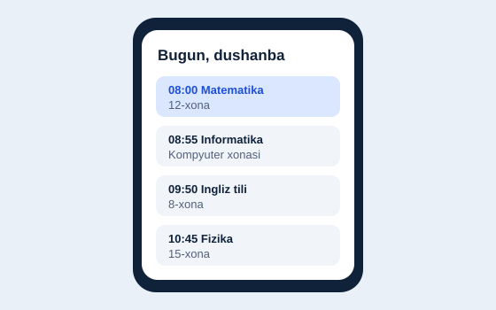
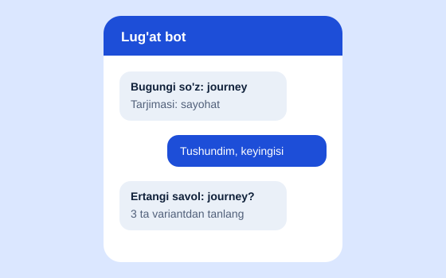

Salom, men
Jasur Abdullayev
Frontend dasturchi va UI dizayner
Murakkab g'oyalarni sodda, tez va chiroyli veb-sahifalarga aylantiraman.
Men haqimda
Men Toshkentda yashayman, 10-sinfda o'qiyman va ikki yildan beri veb-dasturlash bilan shug'ullanaman. Menga foydalanuvchi bir qarashda tushunadigan, telefonda ham qulay ishlaydigan interfeyslar yaratish yoqadi. Hozir Python va algoritmlarni chuqurroq o'rganyapman. Maqsadim — maktabni tugatgach, kompyuter fanlari yo'nalishida o'qib, jamiyatga foyda keltiradigan mahsulotlar yaratish.
Ko'nikmalar
Yaxshi bilaman
- HTML5
- CSS3
- JavaScript
- Responsiv dizayn
- Git va GitHub
O'rganyapman
- Python
- React
- Figma
- Telegram bot (aiogram)
Qo'shimcha
- Jamoada ishlash
- Ingliz tili (B1)
- Muammoni tahlil qilish
Loyihalar
Har bir loyiha bitta aniq muammoni hal qilish uchun yaratilgan.


Ta'lim va yutuqlar
-
Ixtisoslashtirilgan maktab, 10-sinf
Informatika va matematika chuqurlashtirilgan yo'nalishi.
-
Informatika olimpiadasi, tuman bosqichi
2-o'rin.
-
freeCodeCamp: Responsive Web Design
Sertifikat olingan, 5 ta amaliy loyiha topshirilgan.
-
Harvard CS50x
Dasturlash asoslari kursi, 6 ta topshiriq bajarilgan.
Aloqa
Loyiha, stajirovka yoki hamkorlik bo'yicha yozing — bir kun ichida javob beraman.
- Emailjasur@example.com
- Telegram@jasur_dev
- GitHubgithub.com/jasur-dev
- LinkedInlinkedin.com/in/jasur-dev